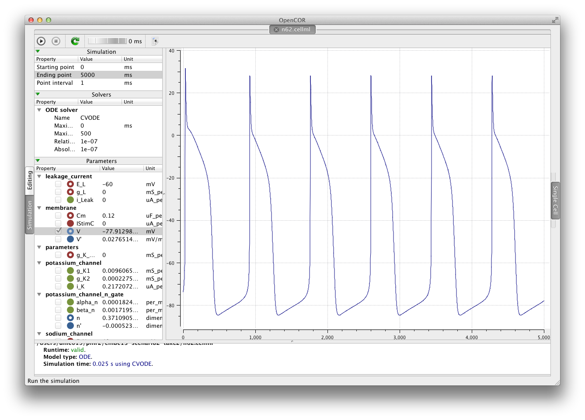

This is the CellML encoding of the 1962 Noble cardiac cellular electrophysiology model. This version of the model is self-pacing, as demonstrated in the image below. A result such as this could be published in some journal article somewhere.
The image above is a screen shot of the OpenCOR application running this model. The 22 June 2013 snapshot version of OpenCOR was used. The links in the right-hand side menu can be used to navigate to the various aspects of this CellML exposure.